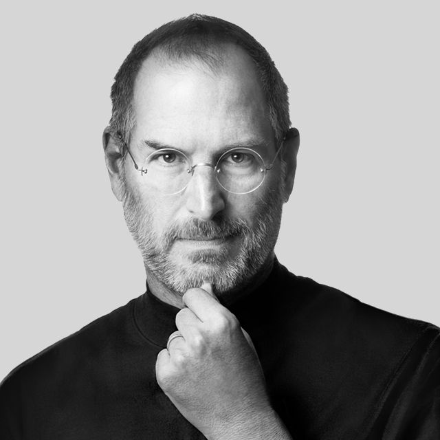

Steve Jobs

Products Created
- Apple II
- Apple Lisa
- The Macintosh computer
- The NeXT computer
- iMac
- iTunes
- iPod
- iPhone
- iPad
Timeline
- 1955 - Born in San Francisco
- 1961 - Jobs family moves to Mountain View, California, what would later become known as Silicon Valley
- 1968 - Jobs calls Bill Hewlett and gets an internship
- 1970 - Job meets future Apple co-founder Steve Wozniak
- 1976 - Co-founds Apple Computer with Wozniak and Ronald Wayne
- 1977 - Apple incorporates
- 1986 - buys Pixar Animation Studios
- 1998 - Apple returns to profitability